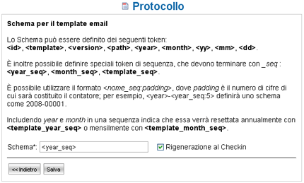

Protocollazione |
LogicalDOC vi consente di effettuare la protocollazione dei documenti inseriti
nell'applicazione valorizzando per ognuno di essi una stringa di caratteri la cui
sequenza (schema) è customizzabile. Nel sottomenù Protocollo è possibile
definire lo schema del protocollo da associare ai vari template,
ai quali a loro volta sono associati i documenti. Al primo avvio
dell'applicazione sono presenti il template default con schema <id> e il
template email con uno schema vuoto.

Figura 52: Protocollo
Cliccando sull'icona 3.5 viene visualizzata la pagina di modifica dello schema.
È presente una legenda esplicativa dei vari token che possono essere
utilizzati per comporre lo schema. La checkbox Rigenerazione al Checkin consente di ricreare il protocollo di un documento per il quale è stato
effettuato il checkin.

Figura 53: Modifica schema protocollo